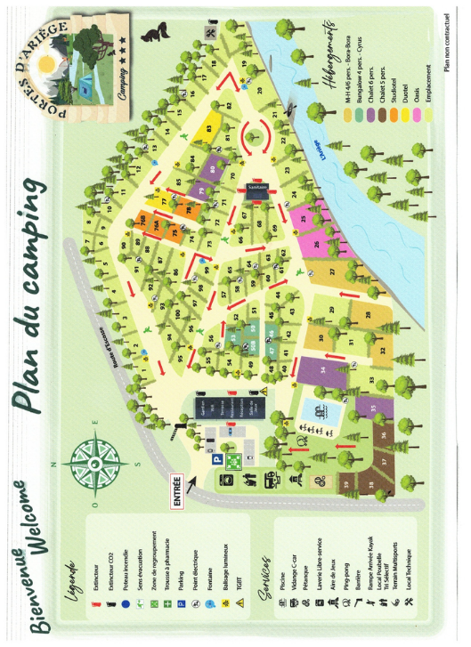

Réception :
9h00 - 12h00 / 15h00 - 19h00
Piscine :
10h00 - 20h00
Restaurant :
12h00 - 14h00 / 19h00 - 21h00
Ouvert d'avril à septembre
Départ :
Avant 10h
Barrière et silence :
De 22h30 à 7h30
Merci de respecter les horaires afin de garantir le confort de tous !
Véhicules :
La vitesse à l’intérieur du camping est limitée à 10 km/h.
Attention aux enfants !
Un seul véhicule est compris par emplacement.
L’accès des voitures n’est autorisé qu’aux personnes logeant au camping (visiteurs ou voitures supplémentaires à l’extérieur).
La circulation des voitures à l’intérieur du camping est possible à partir de 7h30 et jusqu’à 22h30 (parking extérieur entre 22h30 et 7h30)
Bruit :
À partir de 22H30 le retour au calme est de rigueur.
Merci de respecter le sommeil des autres campeurs.
Utilisation des barbecues : seulement les barbecues électriques ou à gaz.
Votre séjour :
Le locatif doit être libéré avant 10h le jour du départ.
Tri sélectif :
Des conteneurs sont à votre disposition sur le parking du camping pour trier les déchets (composteur, recyclables, verre, autres...)
Piscine :
Port du maillot de bain obligatoire !
La baignade est non surveillée, vous pouvez profiter de la piscine sous votre propre responsabilité.
Les enfants sont sous la responsabilité des parents.
Pas de nourriture ni boissons dans l’enceinte de la piscine.
Seuls les clients du camping uniquement sont autorisés à profiter de la piscine.
Visiteurs :
Comme stipulé dans le règlement, tout visiteur est soumis à autorisation du gérant et doit remplir une fiche d’inscription à la réception.
Agissons ensemble pour préserver notre environnement et assurer un bon séjour à tous !
Trier vos déchets :
Des conteneurs sont à votre disposition à l'entrée du camping.
Économisez l’eau :
Adoptons les bons gestes au quotidien. Limitez votre consommation d’eau.
Économisez l’énergie :
Éteignez les lumières et appareils électriques en sortant.
Respectez la nature :
Ne laissez aucun déchet dans la nature et ne cueillez pas les plantes
Respectez les espaces communs :
Pensez à ramasser les déjections de votre animal afin que chacun puisse profiter d'un camping propre et agréable.
Merci pour votre engagement !